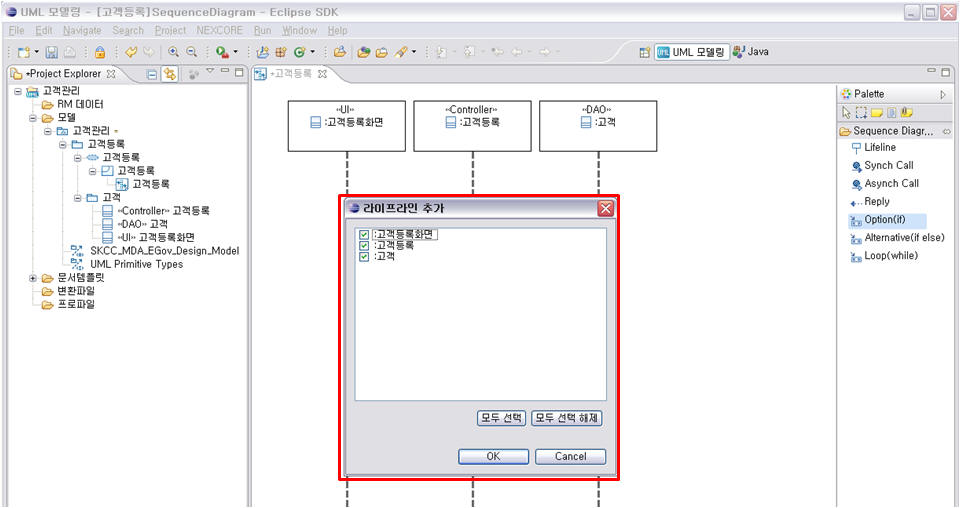
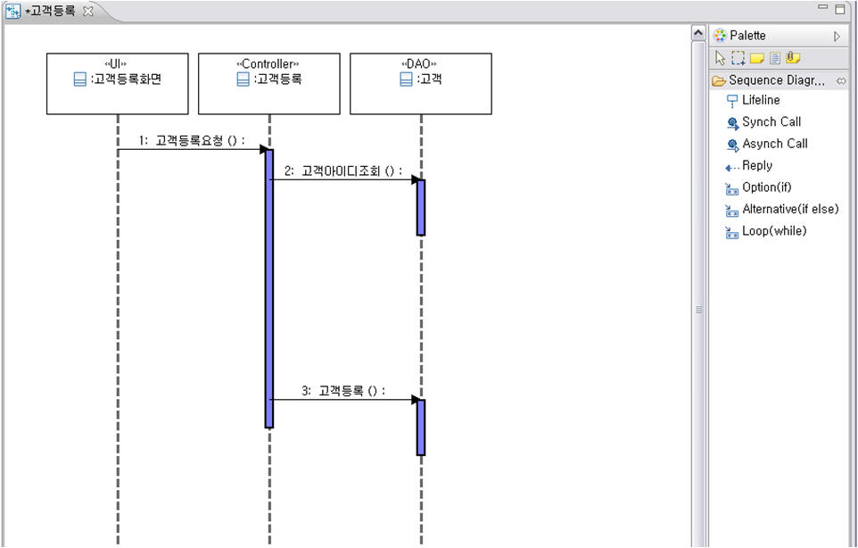
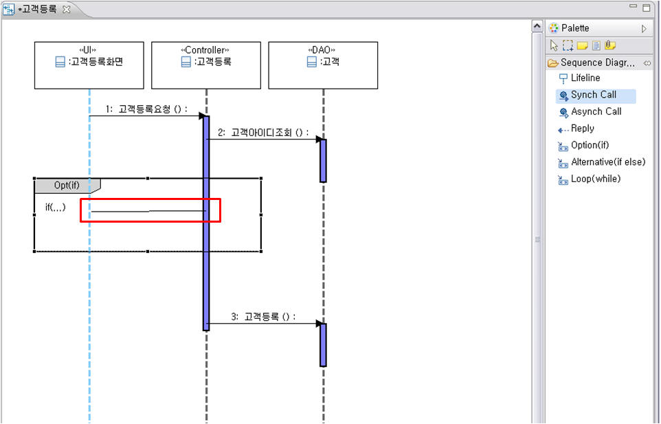
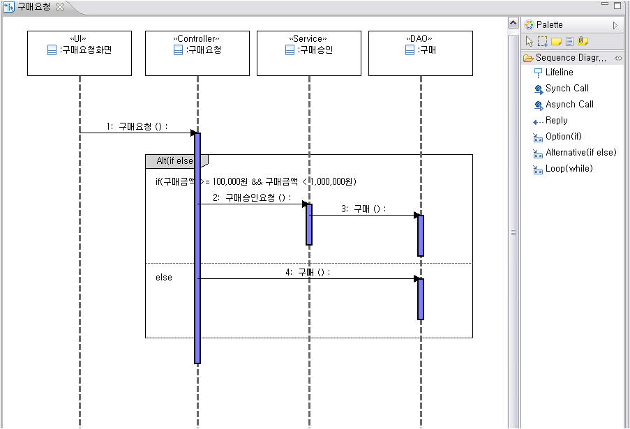
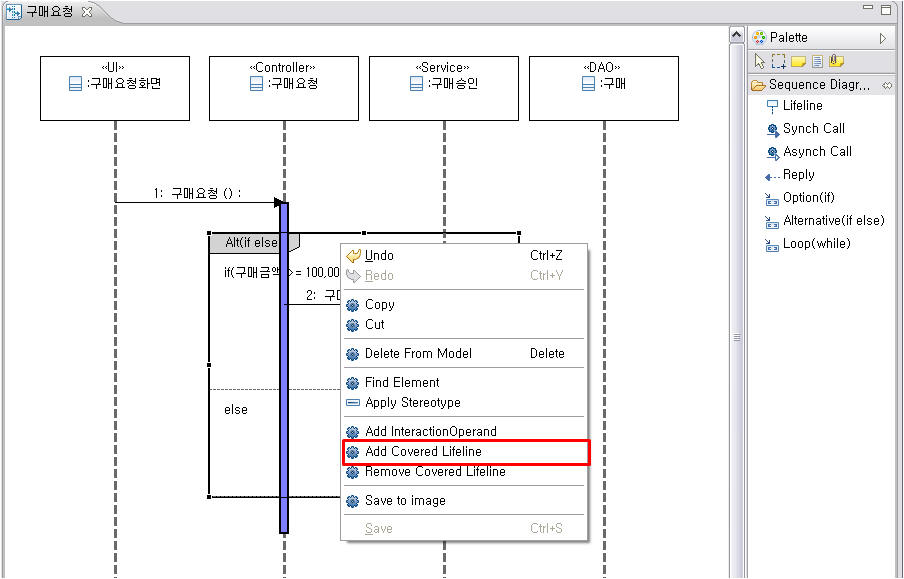
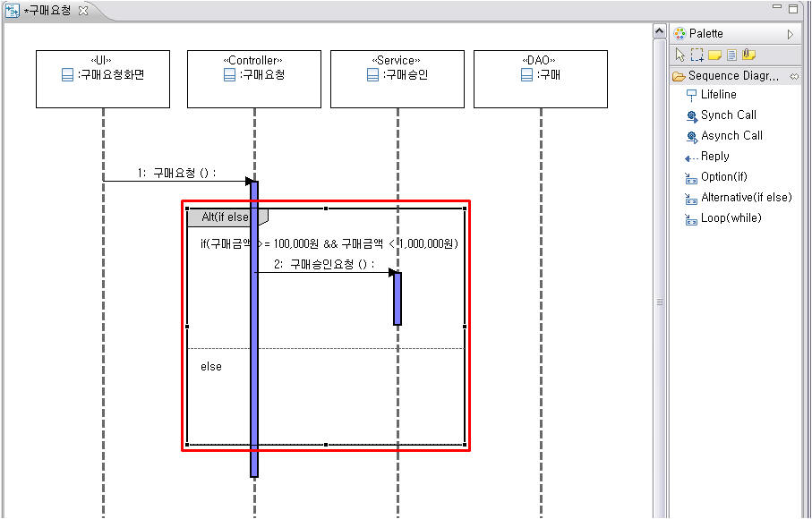
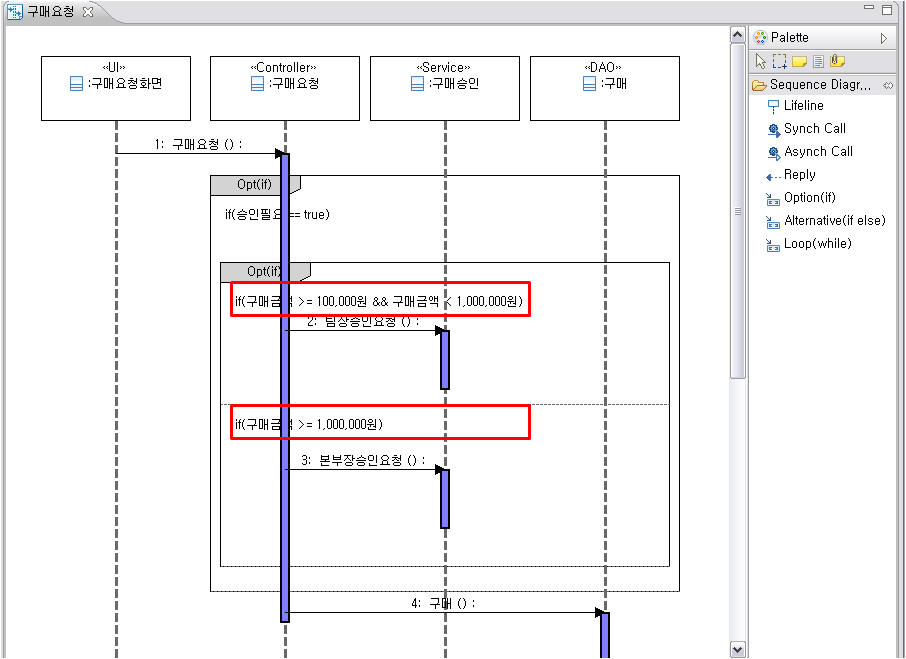

1. 결합단편 생성
시퀀스 다이어그램에서 조건/반복을 모델링을 하기 위해 결합단편을 작성할 수 있습니다. 결합단편은 Option, Alternative, Loop 등 3가지 종류로 작성할 수 있으며, 시퀀스 다이어그램 편집기의 팔레트에서 메뉴로 제공합니다. Option 결합단편은 C, Java 언어에서 사용하는 if와 같은 조건문을 표현하며, Alternative 결합단편은 if-else 조건문, 그리고 Loop 결합단편은 while과 같은 반복문을 작성할 수 있습니다. 결합단편은 InteractionOperand(연산 영역)과 InteractionConstraint(제한조건)으로 구성되어 있습니다.
1.1 Option 결합단편 생성
팔레트에서 Option 메뉴를 선택하고 시퀀스 다이어그램에서 포함하고자 하는 라이프라인 영역을 드래그 합니다. 그러면 포함하고자 하는 라이프라인 추가 다이얼로그가 나타나고 [OK] 버튼을 눌러 다이어그램에 추가합니다.

<그림 1. Option 결합단편 생성 메뉴 및 드래그>

<그림 2. 시퀀스다이어그램에 Option 결합단편 생성 시 라이프라인 추가 다이얼로그>

<그림 3. 시퀀스다이어그램에 Option 결합단편 생성>
1.2 Alternative 결합단편 생성
팔레트에서 Alternative 메뉴를 선택하고 [1.1 Option 결합단편 생성]과 같이 라이프라인 영역을 드래그하여 다이어그램에 추가합니다.

<그림 4. Alternative 결합단편 생성 메뉴>

<그림 5. 시퀀스다이어그램에 Alternative 결합단편 생성>
1.3 Loop 결합단편 생성
팔레트에서 Loop 메뉴를 선택하고 [1.1 Option 결합단편 생성]과 같이 라이프라인 영역을 드래그하여 다이어그램에 추가합니다.

<그림 6. Loop 결합단편 생성 메뉴>

<그림 7. 시퀀스다이어그램에 Loop 결합단편 생성>
1.4 결합단편에 메시지 생성
다음 그림과 같이 고객을 등록하는 업무가 있습니다. 고객등록화면UI에서 고객등록Controller에게 고객등록요청 Operation을 호출하면 고객 DAO에서 고객 아이디를 조회해서 중복되는 아이디인지 검사하고, 중복된다면 고객등록화면에 고객아이디수정 Operation을 호출하는 조건문을 결합단편으로 표현하려고 합니다.

<그림 8. 고객등록요청 시퀀스다이어그램>
팔레트에서 Option 결합단편을 선택하고 다이어그램에서 생성할 위치에 드래그를 합니다. 그러면 결합단편에 추가할 라이프라인 추가 다이얼로그가 뜨고 [OK] 버튼을 클릭하면 다이어그램에 결합단편이 생성됩니다.

<그림 9. 시퀀스다이어그램에 Option 결합단편 드래그>

<그림 10. 결합단편에 라이프라인 추가 다이얼로그>

<그림 11. 시퀀스다이어그램에 Option 결합단편 생성>
팔레트에서 Synch Call 메시지를 선택하고 생성된 결합단편 위에서 메시지를 드래그로 생성하고, 고객아이디수정() Operation을 선택하면 결합단편에 메시지가 생성됩니다.

<그림 12. Option 결합단편에 메시지 생성>

<그림 13. 고객아이디수정() Operation 선택>
아래 그림과 같이 메시지가 생성된 결합단편에 InteractionConstraint(제한조건)을 수정하여 결합단편 생성을 완료합니다.

<그림 14. 제한조건 작성으로 Option 결합단편 작성 완료>
1.5 메시지를 포함하는 결합단편 생성
기존에 작성된 메시지를 포함하는 결합단편을 생성할 수 있습니다. 다음 그림과 같이 고객을 등록하는 업무가 있습니다. 고객등록화면UI에서 고객등록Controller에게 고객등록요청 Operation을 호출하면 고객 DAO에서 고객 아이디를 조회해서 중복되는 아이디인지 검사하고, 중복된다면 고객등록화면에 고객아이디수정 Operation을 호출하는 업무입니다. 고객아이디가 중복되지 않는다면 고객DAO에게 고객등록 Operation을 호출합니다.

<그림 15. 고객등록 시퀀스다이어그램>
위 다이어그램에서 고객아이디수정 메시지는 고객아이디를 조회 후, 중복되었을 경우에만 호출하는 메시지입니다. 아래 그림과 같이 Option 결합단편을 팔레트에서 선택하고 고객아이디수정 메시지를 포함하도록 드래그를 합니다. 그러면 Option 결합단편에 추가할 라이프라인 추가 다이얼로그가 뜨고, [OK] 버튼을 클릭하면 해당 메시지가 포함된 Option결합단편이 생성됩니다.

<그림 16. 고객아이디수정 Operation을 Option결합단편으로 생성>

<그림 6. Option 결합단편에 라이프라인 추가 다이얼로그>

<그림 17. 고객아이디수정 메시지가 포함된 Option 결합단편 생성>
위 그림과 같이 Option 결합단편 생성이 된 후 InteractionConstraint(제한조건)을 선택하고 [F2] 키를 누르거나 클릭을 통해서 제한조건을 수정하여 Option 결합단편 생성을 완료합니다.

<그림 18. Option 결합단편의 제약조건 변경>
2. 결합단편 InteractionOperand 추가
2.1 InteractionOperand 추가
결합단편에서 InteractionOperand(연산 영역)을 추가할 수 있습니다. 다음 그림과 같이 구매요청 시퀀스 다이어그램이 있습니다. 구매요청 메시지가 호출되고 구매금액이 100,000원 이상이며 1,000,000 미만이면 구매승인요청 메시지를 호출하고, 아니면 바로 구매 메시지를 호출하는 Alternative 결합단편이 생성되어 있습니다.

<그림 19. 구매요청 시퀀스다이어그램>
고객아이디수정 메시지는 고객아이디를 조회 후, 중복되었을 경우에만 호출하는 메시지입니다. 아래 그림과 같이 Option 결합단편을 팔레트에서 선택하고 고객아이디수정 메시지를 포함하도록 드래그를 합니다. 그러면 Option 결합단편에 추가할 라이프라인 추가 다이얼로그가 뜨고, [OK] 버튼을 클릭하면 해당 메시지가 포함된 Option결합단편이 생성됩니다.

<그림 20. Alternative 결합단편에 InteractionOperand 추가 매뉴>

<그림 21. Alternative 결합단편에 새로운 InteractionOperand 추가>
새로 추가된 InteractionOperand 영역에 구매금액이 1,000,000원 이상이라면 승인을 2번 받아야 하는 메시지를 작성합니다. 다음 그림과 같이 새로운 InteractionOperand(연산 영역)을 추가하고 메시지를 생성할 수 있습니다.

<그림 22. 추가된 InteractionOperand 메시지 작성>
3. 결합단편 Covered Lifeline 추가 및 제거
3.1 결합단편 Covered Lifeline 추가
이미 생성된 결합단편에 라이프라인을 추가할 수 있습니다. 다음 그림과 같이 구매요청, 구매승인 라이프라인만 추가된 결합단편에 구매 라이프라인을 추가합니다.

<그림 23. 결합단편에 추가할 라이프라인이 있는 시퀀스다이어그램>
라이프라인을 추가할 결합단편을 선택하고 [Add Covered Lifeline] 메뉴를 선택하면 아래 그림과 같이 라이프라인 추가 다이얼로그가 나타납니다. 다이얼로그에서 추가할 구매 라이프라인을 선택하고 [OK] 버튼을 누르면 해당 라이프라인이 결합단편에 포함됩니다.

<그림 24. Covered Lifeline 추가 매뉴>

<그림 25. 라이프라인 추가 다이얼로그>

<그림 26. 라이프라인 추가 완료>
3.2 결합단편 Covered Lifeline 제거
이미 생성된 결합단편에서 라이프라인을 제거할 수 있습니다. 다음 그림과 같이 구매요청, 구매승인, 구매 라이프라인이 추가된 결합단편에 구매 라이프라인을 제거합니다.

<그림 27. 결합단편에 추가할 라이프라인이 있는 시퀀스다이어그램>
라이프라인을 제거할 결합단편을 선택하고 [Remove Covered Lifeline] 메뉴를 선택하면 아래 그림과 같이 라이프라인 제거 다이얼로그가 나타납니다. 다이얼로그에서 제거할 구매 라이프라인을 선택하고 [OK] 버튼을 누르면 해당 라이프라인이 결합단편에서 제거됩니다.

<그림 28. Covered Lifeline 제거 매뉴>

<그림 29. 라이프라인 제거 다이얼로그>

<그림 30. 라이프라인 제거 완료>
4. 결합단편에 서브 결합단편 추가
결합단편은 단계적으로 작성 가능합니다.
4.1 결합단편에 서브 결합단편 추가
다음 그림과 같이 구매요청 시퀀스 다이어그램이 있습니다. 구매요청 메시지가 호출되고 승인이 필요할 경우에만 구매승인을 작성하기 위해 Option 결합단편을 생성했습니다. 이 결합단편 안에서 구매금액에 때라서 팀장승인요청(), 본부장승인요청() 메시지를 작성하기 위해 Option결합단편을 추가합니다.

<그림 31. 구매승인 조건문 작성이 필요한 시퀀스 다이어그램>
팔레트에서 Option 결합단편을 선택하고 다음 그림과 같이 해당 영역에 드래그합니다. 라이프라인 추가 다이얼로그에서 라이프라인들을 추가하고 서브 Option 결합단편을 생성합니다.

<그림 32. 결합단편에 Option 결합단편 드래그>

<그림 33. 생성할 결합단편에 라이프라인 추가>

<그림 34. Option결합단편 안에 Option결합단편 생성>
[2.1 InteractionOperand 추가]에서처럼 새로운 InteractionOperand를 추가하고 각 InteractionOperand에 팀장승인요청(), 본부장승인요청() 메시지를 작성합니다. 그리고 각 InteractionConstraint(제한조건)을 작성하여 결합단편 작성을 완료합니다.

<그림 35. 서브결합단편에 InteractionOperand 추가>

<그림 36. 각 InteractionOperand에 메시지 생성>

<그림 37. 각 InteractionConstraint에 제한조건 작성>